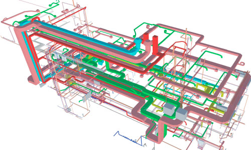
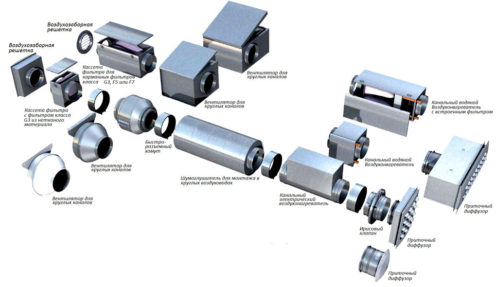
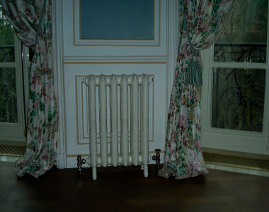
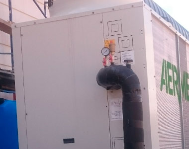
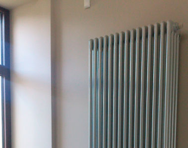

Мы реализуем также вспомогательное оборудование котельной от производителей мирового уровня, таких как Simplex и Rossweiner, а так же Kan-therm, Meibes и Buderus. Распределительный коллектор, счетчики воды, узлы подключения радиаторов - все это вспомогательное оборудование устанавливают специалисты "Вертекс Термолайн". Мы выбрали ведущие фирмы, потому что вся их продукция, и распределительный коллектор отопления, и термостатические узлы подключения и котлы ACV сделаны на самом высоком уровне качества. В перечень услуг компании "Вертекс Термолайн" входит также обвязка котельных, которая позволяет оптимизировать работу котла отопления.
Приточная вентиляция помещений
Как это работает
Важным условием высокой продуктивности труда являются комфортные условия работы. Одно из таких условий – наличие свежего воздуха, то есть вентиляция. Простейшая система вентиляции – открытая форточка или окно, такая система подходит для дома, но никак не для офиса. Офис имеет следующии особенности: наличие большого количества людей, постоянное наличие людей в помещении, необходимость соблюдения допустимых уровней шума.
Сталкиваясь с необходимостью организации системы вентиляции в том или ином помещении, в первую очередь возникает вопрос: с чего нужно начать? Многие считают, что самое главное – это выбор оборудования, которое будет установлено. Несомненно, от качества климатической техники, которая будет в дальнейшем обслуживать помещение, зависит львиная доля комфорта. Если приобрести дешевое или непроверенное оборудование, то скорее всего оно принесет лишь дополнительные хлопоты: будет неэффективно работать, не будет справляться с объемами помещения, принесет дискомфорт своей шумной работой, а также существенные финансовые траты на эксплуатацию. Однако и более дорогое оборудование может не решить основные задачи, если его неправильно подобрать. Для того, чтобы избежать ошибок, которые могут привести к материальным потерям, следует начинать реализацию вентиляционной системы с грамотного инженерного проекта. Что это значит? Проект системы вентиляции – это техническая документация, которая содержит детальный чертеж будущей вентиляционной системы с местами размещения оборудования и технико-экономическим обоснованием его выбора. Иными словами он не только показывает, как будет смонтировано оборудование, но и объяснит, почему выбрана именно эта вентустановка или вентилятор.

Устройство приточных вентиляционных систем
Согласно нормативам, температура перемещаемого в помещение воздуха должна составлять не менее 18 градусов. Для формирования требующихся параметров понадобится нагревательное устройство. Кроме того, необходимо защитить жилье от грязи и пыли, которая может проникнуть внутрь вместе с интенсивно поступающими воздушными массами. Поэтому такие системы в обязательном порядке комплектуются фильтрами. Еще один важный элемент — система автоматического управления. Без такого контроля устройство может перегреться, что приведет к поломкам, пожарам или другим неприятностям. Наконец, необходима и система подавления шума, как проникающего с улицы, так и издаваемого прибором. Таким образом, любая приточная вентиляция должна быть снабжена следующими элементами:
- вентилятором;
- нагревателем;
- фильтром;
- системой автоматического управления;
- системой шумопоглощения.
Разумеется, такое устройство может быть выполнено в различных вариантах. Например, для больших зданий система вентилирования реализуется в виде отдельного помещения — вентиляционной камеры. Это так называемые наборные системы вентиляции. Для их создания подбирают отдельные элементы и устанавливают их в отведенной для этого комнате.

Следует понимать, что заявленная производителем максимальная мощность установки на практике реализована не будет. Фактическая производительность ПУ зависит от уровня сопротивления сети. Определить реальную эффективность прибора с учетом характеристик конкретной канальной системы можно с помощью графика вентиляционной характеристики. Она обычно содержится в техническом паспорте изделия.
Моноблочные приточные установки
Моноблочные приточные установки представляют собой электромеханическое устройство обеспечивающее вентиляцию помещения при помощи принудительного поступления уличного воздуха. В этом состоит главное отличие устройств данного типа от кондиционеров, которые обрабатывают и «гоняют» один и тот же воздух внутри помещения. Моноблочные приточные установки могут регулировать параметры нагнетаемого воздуха: очищают его от пыли, грязи и газов, охлаждают или нагревают до оптимальной температуры.
Моноблочные приточные установки в отличие от модульных систем, собираемых на месте эксплуатации, представляют собой блок компонентов, находящихся в едином шумоизоляционном корпусе, который монтируется на заводе-изготовителе. Таким образом, моноблочные приточные установки – это готовая система вентиляции, не требующая масштабных работ по ее установке. Пуско-наладочные работы и монтаж проводятся в короткие сроки.
Состоят моноблочные приточные установки из множества элементов, состав которых может варьироваться в зависимости от решаемых задач. Основу устройства составляет вентилятор, забирающий воздух с улицы. Кроме него в систему входят: воздухозаборная решетка, фильтр, клапан для регуляции поступающего воздуха, воздуховоды, нагревательный элемент, воздухоохладитель, увлажнитель и система автоматической регуляции устройства, контролирующая датчики, скорость вентилятора и мощность нагревателя. Управляются моноблочные приточные установки при помощи пульта.
Вам может быть интересно

Мы реализуем также вспомогательное оборудование котельной от производителей мирового уровня, таких как Simplex и Rossweiner, а так же Kan-therm, Meibes и Buderus. Распределительный коллектор, счетчики воды, узлы подключения радиаторов - все это вспомогательное оборудование устанавливают специалисты "Вертекс Термолайн". Мы выбрали ведущие фирмы, потому что вся их продукция, и распределительный коллектор отопления, и термостатические узлы подключения и котлы ACV сделаны на самом высоком уровне качества....Читать далее

Мы реализуем также вспомогательное оборудование котельной от производителей мирового уровня, таких как Simplex и Rossweiner, а так же Kan-therm, Meibes и Buderus. Распределительный коллектор, счетчики воды, узлы подключения радиаторов - все это вспомогательное оборудование устанавливают специалисты "Вертекс Термолайн". Мы выбрали ведущие фирмы, потому что вся их продукция, и распределительный коллектор отопления, и термостатические узлы подключения и котлы ACV сделаны на самом высоком уровне качества....Читать далее

Мы реализуем также вспомогательное оборудование котельной от производителей мирового уровня, таких как Simplex и Rossweiner, а так же Kan-therm, Meibes и Buderus. Распределительный коллектор, счетчики воды, узлы подключения радиаторов - все это вспомогательное оборудование устанавливают специалисты "Вертекс Термолайн". Мы выбрали ведущие фирмы, потому что вся их продукция, и распределительный коллектор отопления, и термостатические узлы подключения и котлы ACV сделаны на самом высоком уровне качества....Читать далее